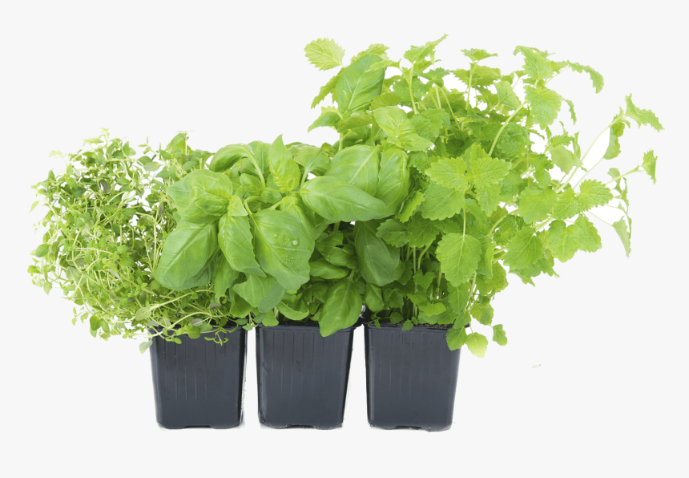
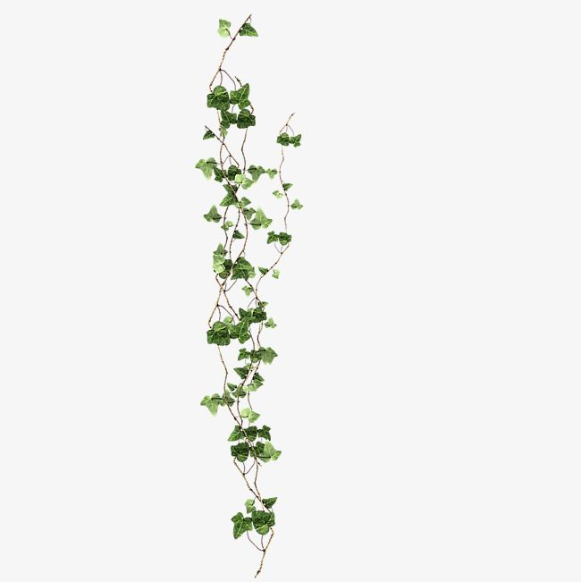

Go To Bottom
This is Plant 2 page
Topic 10Topic 11
Topic 12
Herb

Herb : In general use, herbs are a widely distributed and widespread group of plants, excluding vegetables and other plants consumed for macronutrients, with savory or aromatic properties that are used for flavoring and garnishing food, for medicinal purposes, or for fragrances. Culinary use typically distinguishes herbs from spices. Herbs generally refers to the leafy green or flowering parts of a plant (either fresh or dried), while spices are usually dried and produced from other parts of the plant, including seeds, bark, roots and fruits. Herbs have a variety of uses including culinary, medicinal, aromatic and in some cases, spiritual. General usage of the term "herb" differs between culinary herbs and medicinal herbs; in medicinal or spiritual use, any parts of the plant might be considered as "herbs", including leaves, roots, flowers, seeds, root bark, inner bark (and cambium), resin and pericarp. The word "herb" is pronounced /hɜːrb/ in Commonwealth English,[1] but /ɜːrb/ is common among North American English speakers and those from other regions where h-dropping occurs. In botany, the noun "herb" refers to a "plant that does not produce a woody stem", and the adjective "herbaceous" means "herb-like", referring to parts of the plant that are green and soft in texture".[2][3]
Shrub
.jpg)
Shrub : A shrub (often also called a bush) is a small-to-medium-sized perennial woody plant. Unlike herbaceous plants, shrubs have persistent woody stems above the ground. Shrubs can be either deciduous or evergreen. They are distinguished from trees by their multiple stems and shorter height, less than 6–10 m (20–33 ft) tall.[1][2] Small shrubs, less than 2 m (6.6 ft) tall are sometimes termed as subshrubs. Many botanical groups have species that are shrubs, and others that are trees and herbaceous plants instead. Some definitions state that a shrub is less than 6 m (20 ft) and tree is over 6 m. Others use 10 m (33 ft) as the cut-off point for classification.[2] Many species of tree may not reach this mature height because of hostile less than ideal growing conditions, and resemble a shrub-sized plant. However such species have the potential to grow taller under the ideal growing conditions for that plant. In terms of longevity, most shrubs fit in a class between perennials and trees; some may only last about five years even in good conditions, others, usually the larger and more woody ones, may live to 70 or more, but on average they last 7–10 years.[3] Shrubland is the natural landscape dominated by various shrubs; there are many distinct types around the world, including fynbos, maquis, shrub-steppe, shrub swamp and moorland. In gardens and parks, an area largely dedicated to shrubs (now somewhat less fashionable than a century ago) is called a shrubbery, shrub border or shrub garden. There are many garden cultivars of shrubs, bred for flowering, for example rhododendrons, and sometimes even leaf colour or shape. Compared to trees and herbaceous plants, perhaps a relatively small number of shrubs have agricultural or commercial uses. Apart from the several berry-bearing species (using the culinary rather than botanical definition), few are eaten directly, and they are generally too small for much timber use unlike trees.[4] Those that are used include several perfumed species such as lavender and rose, and a wide range of plants with medicinal uses. Tea and coffee are on the tree-shrub boundary;[5] they are normally harvested from shrub-sized plants, but these would be large enough to become small trees if left to grow instead.
Creeping Plants
